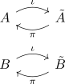

subcomplexes of a CW complex as excisive triad
Proposition
Let $X$ be a CW-Complex, $A,B$ CW subcomplexees. Then $(X,A,B)$ form an excisive triad
Proof
follows from:
As there exist open sets $\tilde{B}, \tilde{A} \subseteq X$ and homotopy equivalences

which by construction agree on their intersections $A \cap B, \tilde{A} \cap \tilde{B}$.
Hence
\begin{displaymath}
\begin{tikzcd}
& A \arrow[]{r}{\iota} & \tilde{A} &
A \cap B \arrow[hookrightarrow, ]{rd}{} \arrow[hookrightarrow, ]{ru}{} & \tilde{A} \cap \tilde{B} &
& B \arrow[]{r}{\iota} & \tilde{B} &
\end{tikzcd}
\end{displaymath}